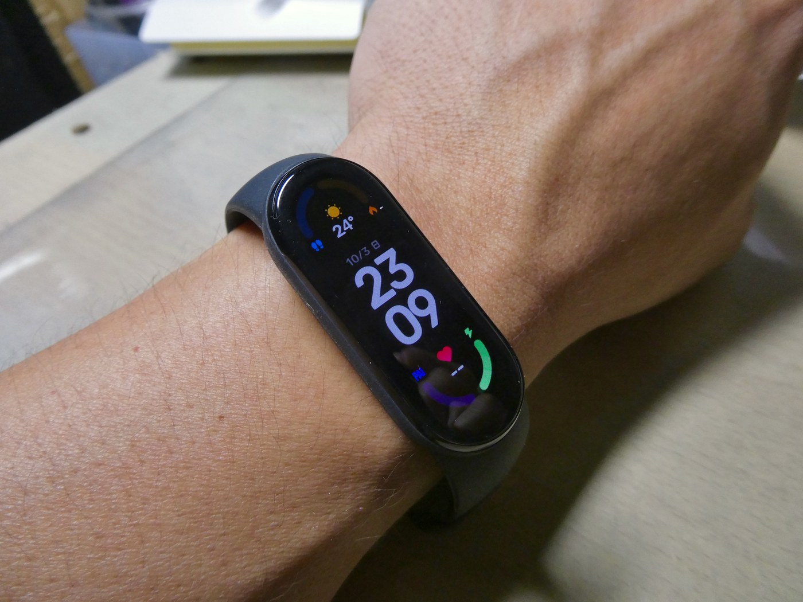

The Autopsy Report · Device #060
Xiaomi Mi Smart Band 6
A bigger, brighter screen and blood-oxygen sensing — and a main chip Xiaomi never identified. The Band 6 is the rare device where the most important part is the one nobody can name.
What is this thing?
The Xiaomi Mi Smart Band 6 is the 2021 follow-up to the Mi Band 4: a fitness capsule with a larger 1.56-inch AMOLED display (450 nits), SpO2 blood-oxygen sensing alongside the usual heart-rate tracking, plus accelerometer and gyroscope. Model XMSH15HM. AndroidCommunity · GSMArena
Not yet on our bench
Straightforward honesty first: BareBoard has not possessed, disassembled, tested, booted, or touched the firmware of this unit. We don't have one on the bench yet. Everything below is built from public records — FCC filings, manufacturer material, datasheets, manuals, and published teardowns — with every claim linked to its source and graded for confidence. When a fact genuinely requires our hands on hardware (boot logs, our own photos, exact board revision of a future unit), we say so out loud.
That framing is what makes publishing now legitimate: this is a public-records autopsy, and it will grow into a bench autopsy the day a unit lands on our desk.
A short history
- March 29, 2021Xiaomi launches the Mi Smart Band 6 with the bigger display and SpO2 sensing. AndroidCommunity
- 2021It lands in India, Indonesia, and other markets with regional certifications — but no U.S. FCC filing. GSMArena
The outside
The same capsule-in-strap formula as the Band 4, but the screen now stretches nearly edge to edge: 1.56 inches of AMOLED at 450 nits. The capsule pops out for charging; the back carries the PPG heart-rate/SpO2 sensor window. AndroidCommunity

The board
Honestly: the chipset is unknown. Xiaomi's own launch materials don't name it, and no public teardown text we've found identifies the main chip, the memory, the storage, or the sensor part numbers. This is a device where the public record describes the product beautifully and the circuit not at all. We'll say it once more for the record: the chipset of the Mi Smart Band 6 is unknown in every public source we checked. AndroidCommunity
Under the microscope: the chips
There is no chip table for this device. Confirmed needs a primary source and Likely needs corroborated public records — and for the Band 6's internals we have neither. No chip has been reliably identified in any public record we found. When a unit reaches our bench, this section gets built for real.
The government's file on this device
There isn't a U.S. one. We found no FCC filing for the Mi Smart Band 6 (XMSH15HM) — the certifications on record are from India and Indonesia. No FCC photos or test reports exist to learn from here.
Debug & service modes
Our posture: we listen, we don't knock. Only publicly verified interfaces.
User-facing: pairing, charging, and factory reset run through the companion app and the band's own menus — ordinary, documented, user-level operations.
No public debug interface. No serial console, JTAG header, or diagnostic mode appears in any public record we found.
What the public record says
The unnamed chip. It's genuinely unusual: a device this popular, and the main chip goes unidentified in every public source we checked — including the launch coverage, which explicitly notes the chipset wasn't specified. That silence is itself the finding. AndroidCommunity
What is verifiable: the 1.56-inch 450-nit AMOLED, SpO2 and PPG sensing, accelerometer and gyroscope — all from launch coverage. GSMArena
What we didn't do
- We have not possessed, disassembled, tested, or booted this device.
- We have not extracted, modified, shared, or reverse-engineered its firmware.
- We document only publicly verified interfaces and user-facing modes — read-only, no lock bypass, no authentication defeat, no credential or key material.
- Anything below marked as unknown stays unknown until the bench says otherwise.
By the numbers
- Model: XMSH15HM — no U.S. FCC filing found
- Chipset: unknown — not specified in launch coverage or any public teardown we found
- Display: 1.56-inch AMOLED, 450 nits
- Sensors: PPG heart-rate, SpO2, accelerometer, gyroscope
- Launched: March 29, 2021
Words to know
Every term this page uses, in plain English. No prior knowledge required.
- PPG
- Photoplethysmography — the optical trick of shining light into skin and reading the reflection to measure pulse.
- SpO2
- Blood-oxygen saturation — the percentage of your blood carrying oxygen, estimated from the wrist.
- AMOLED
- A display technology where each pixel makes its own light — vivid, and power-sipping on dark screens.
- nits
- A unit of screen brightness. 450 nits is comfortably readable outdoors.
- FCC
- The U.S. regulator that approves wireless devices. No filing here means no regulator photos to learn from.
Sources & confidence
- Display size and brightness, SpO2/PPG, accelerometer, gyroscope, launch date: AndroidCommunity and GSMArena launch coverage — Likely.
- Chipset not specified: stated explicitly in the launch coverage itself — Confirmed as a documented gap.
- No U.S. FCC filing for XMSH15HM; India/Indonesia certifications exist: negative/positive results from our search — stated as such.
- Anything not listed here is unknown until the bench says otherwise. We'll say so, out loud, when that's the case.
Serial numbers and QR codes are blacked out of every published photo. Raw originals stay private.
Legal note. BareBoard is an educational project. Everything on this page comes from public records — FCC filings, manufacturer material, datasheets, and published teardowns — plus our own analysis of those records. We don't publish, host, or distribute firmware, keys, passwords, or credentials. Product names and trademarks belong to their respective owners and appear here only to identify the hardware. If you believe anything here infringes your rights, contact us and we'll address it promptly.